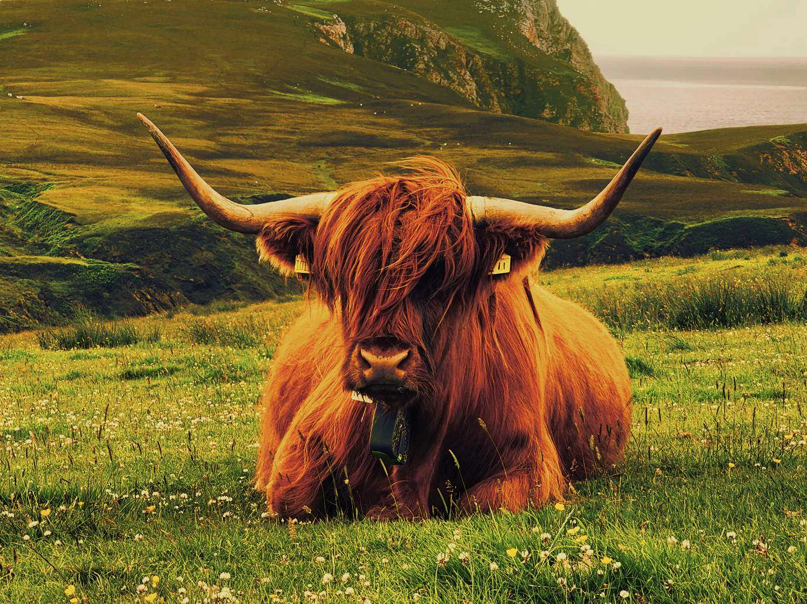
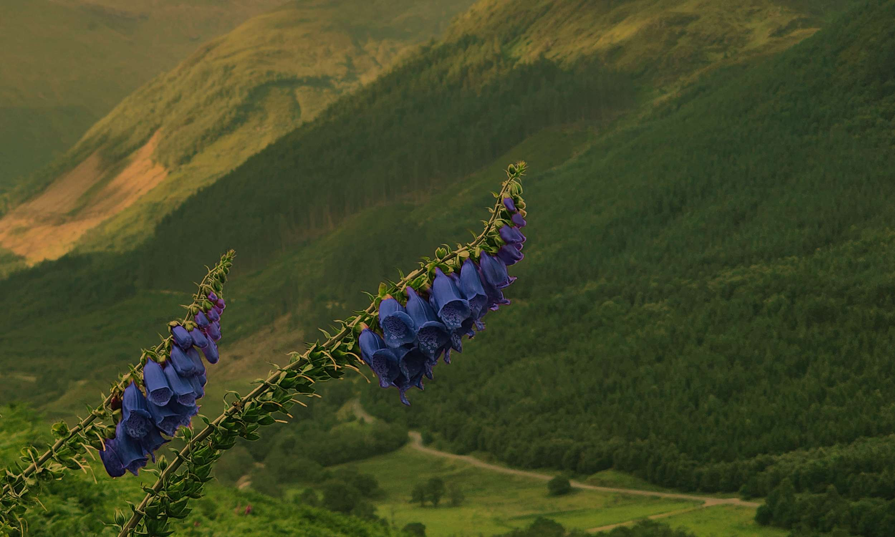
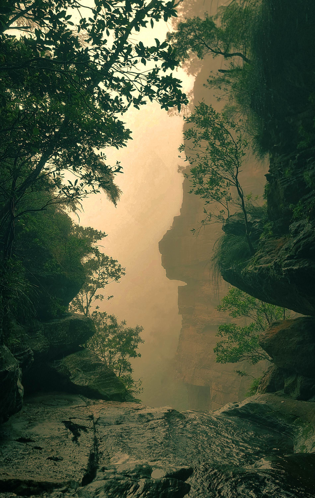

Här hittar du bilder jag redigerat och hur de såg ut före redigeringen


Bild 1
Denna bild valde jag att beskära för att rama in motivet. Jag valde också att ändra färgtemperaturen i bilden för att ge en mer naturlig känsla genom att göra bilden kallare. Genom att ändra färgtemperaturen så får bilden tillbaka sin naturliga färg och blir mer realistisk. Gräset blev grönt och himlen blev en mer naturlig gråblå färg. Detta gjorde jag genom att ändra färgkurvorna. Den oredigerade bilden hade mycket rött i sig vilket gjorde att bilden såg väldigt varm ut. Genom att dra ner det röda i bilden och öka det blåa fick bilden tillbaka naturliga färger. Jag valde också att öka kontrasten i bilden för att få fram mer detaljer. I ett senare skede valde jag att göra bilden lite mörkare genom att dra ner ljusstyrkan. Slutresultatet blev en bild med mer fokus på motivet och en mer naturlig färg på bilden.


Bild 2
Denna bild valde jag också att beskära för att få mer fokus på blommorna i mitten. Den oredigerade bilden är väldigt mörk och därför valde jag att öka ljusstyrkan i bilden. Jag valde också att ändra färgtemperaturen i bilden för att göra den varmare. Detta gjorde jag genom att öka det röda och gröna i bilden och dra ner lite på det blåa. I denna bild valde jag att ändra färg på blommorna vilket gör att de sticker ut mer från bakgrunden utan att det ser onaturligt ut. Detta gjordes genom att sätta en mask runt blommorna och sedan ändra färg på det lila och rosa i bilden. Genom att sätta en mask runt blommorna påverkas inte färgerna runt omkring. Färgen ändrades genom att ändra nyansen i bilden från rosa till blå/lila. Slutresultatet blev en bild med mer fokus på blommorna och en mer naturlig och varmare färg på hela bilden.


Bild 3
Denna bild valde jag också att beskära för att få bort störande element och få mer fokus på vattendraget mellan grönskan. Jag valde också att ta bort mannen i mitten samt skylten genom att använda klonstämpel verktyget. Detta gjorde jag för att lägga mer fokus på naturen. I denna bild använde jag kurvor för att ändra färgtemperaturen i bilden. Jag valde att göra bilden varmare genom att öka det röda och gröna i bilden medans jag drog ner det blåa. Detta gjorde att bilden blev lite ljusare och passade bättre ihop med de andra bilderna. Jag valde också att öka kontrasten i bilden för att få fram mer detaljer så som grönskan och bergeni bakgrunden. Slutresultatet blev en bild med mer fokus på vattendraget och naturen samt en mer naturlig och varmare färg på hela bilden.